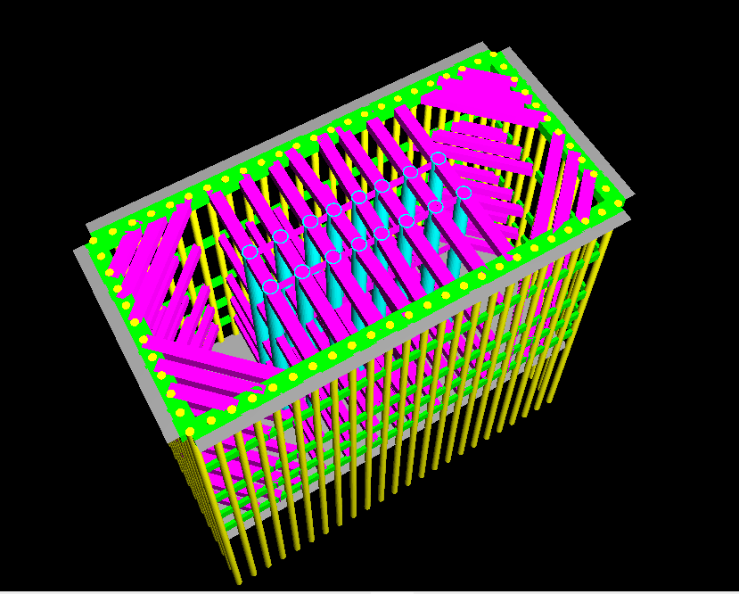
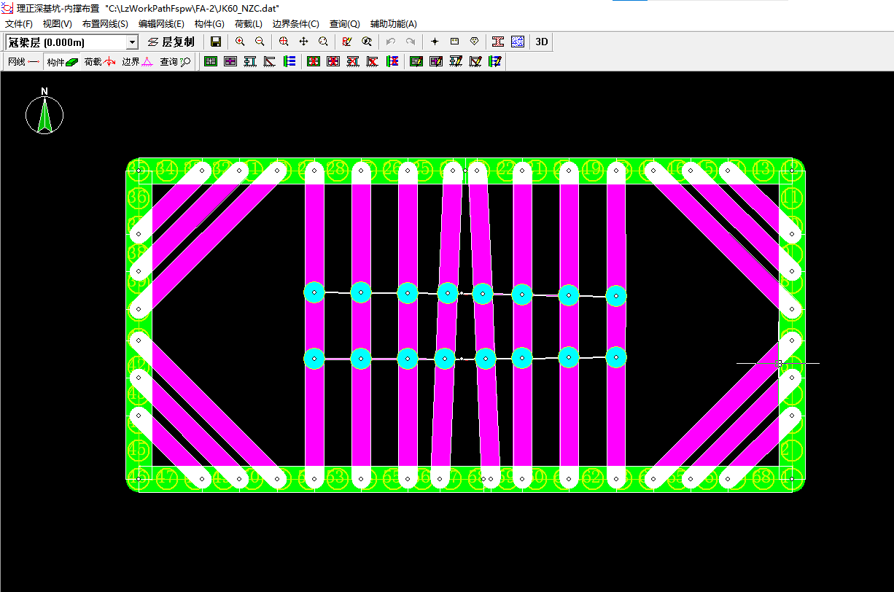
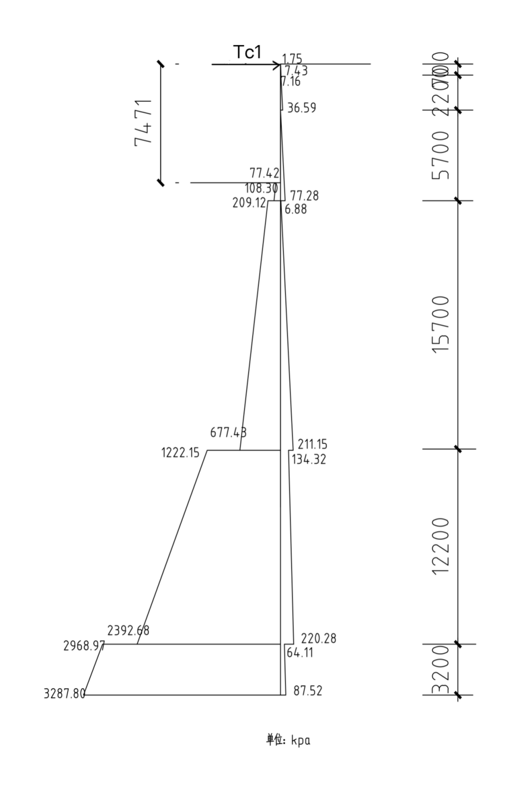
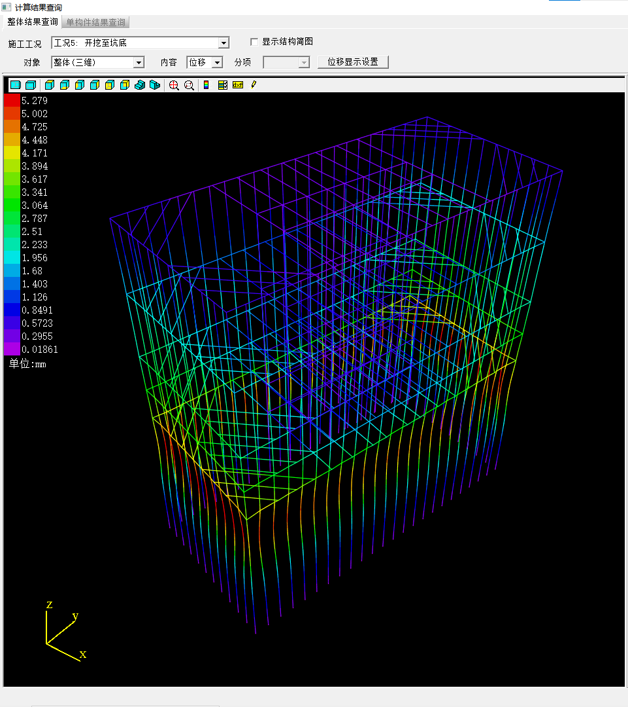

Excavation support design for a three-level interchange station in Nanjing's old city. I did the whole design on my own, from option selection through calculation and checks to drawings: bored piles with a jet-grout cut-off, and five strut levels (capping beam plus four internal levels). Earth pressure, embedment, reinforcement and stability were hand-calculated, then cross-checked in Lizheng excavation software, followed by dewatering and monitoring plans.
The station sits at the Yunnan Road and Beijing West Road intersection, an interchange with the operating Line 4: a three-level island station with a 140 m platform and a base slab about 23.3 m deep.
Three things made it hard:
A crowded site. Old city, dense buildings, heavy traffic, many power, telecom and water utilities, and room for only half-width deck traffic diversion.
Soft over hard ground. Fill and silty clay over weathered mudstone, conglomerate and andesite, with confined fissure water in the bedrock.
Safety class 1. Over 12 m deep beside critical facilities, so an importance factor of 1.1 and the strictest checks.
Option selection by elimination. Cantilever walls suit only good soil and shallow pits; the soil cannot provide enough anchor capacity for tiebacks; a gravity wall is too wide for the site and cannot control deformation. Internal struts suit any soil and depth, and were already proven on the adjacent Line 4 excavation.
Structure. 1200 mm bored piles at 1500 mm centres, 800 mm jet-grout columns between piles, and a capping beam plus four strut levels.
Earth pressure by stage. Rankine active and passive pressures for each excavation stage, each calculated by hand and compared with Lizheng.
Embedment and stability. Piles socket into weathered rock: assume a depth, check overturning, and settle on 12.8 m embedment (pile length about 37.6 m); then check basal heave and overall stability.
Reinforcement and struts. Reinforcement for piles, capping beam, walings and struts from the internal forces, with bending and shear capacity checks.
Dewatering and monitoring. In-pit drainage plus open pumping to 0.5 m below formation; seven monitoring items, each with frequency and alarm values.
Whole-model run. A 3D Lizheng model joining piles and all strut levels to get displacement, bending moment and axial force for each level.

理正三维模型：围护桩与五道支撑Lizheng 3D model: piles and five strut levels

冠梁层支撑平面布置：两端角撑，中部对撑加立柱Capping-beam strut plan: corner braces at the ends, cross struts with king posts in the middle
3. 关键判断3. Key judgements
坚持手算和电算两条线。软件算得快，但出错不容易发现。我每个工况都先手算，再用理正复核，例如工况二在 24.3 m 深处土压力两者都是 677.43 kPa。两条线对得上，结果才可信。
Two independent lines: hand and software. Software is fast but its errors are hard to spot. Every stage was hand-calculated first and then checked in Lizheng; for example, in stage 2 both gave 677.43 kPa at 24.3 m depth. Agreement between the two is what makes the result trustworthy.
Embedment from checks, not rule of thumb. Assume a rock socket depth, confirm the overturning factor meets 1.3 for class 1, check the 0.2H detailing rule, then fix 12.8 m.
Learn from the neighbour, do not copy it. Line 4's success supported the choice of struts, but strut levels, pile size and reinforcement were all recalculated for this station's depth and ground.

工况二土压力手算分布图（单位 kPa），与理正电算结果逐点核对Stage 2 earth pressure by hand (kPa), checked point by point against Lizheng
All checks meet class 1 requirements. Monitoring alarms follow class 1: cumulative wall displacement 0.3% of depth (3–5 mm/day), ground settlement 0.2% of depth, strut force 80% of design value.

整体计算：开挖至坑底工况的三维位移（单位 mm）Whole model: 3D displacement at final excavation (mm)
Nine A3 construction drawings in AutoCAD: general notes, support plan and section, strut plans for each level, monitoring layout, details and construction stages. Four are shown below; click to enlarge.
Looking back after studying project management, the design maps onto management work: option selection is a decision, monitoring alarms are risk control, and hand-versus-software checks are quality assurance. Understanding the engineering lets me speak the same language as designers and contractors.
毕业设计全文约 3 万字，含大量公式和计算表，这里只摘录方案比选一节，内容未改动。The full thesis is about 30,000 Chinese characters with many formulas and tables; only the option-selection section is quoted here, unchanged.